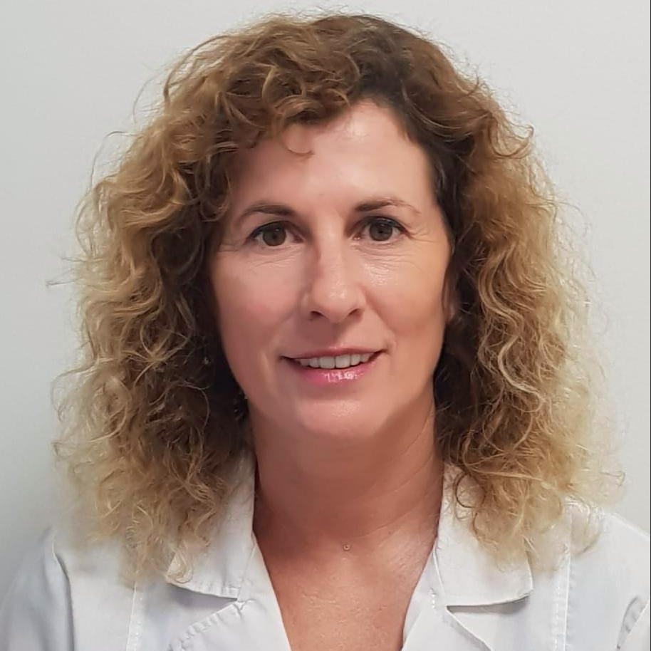
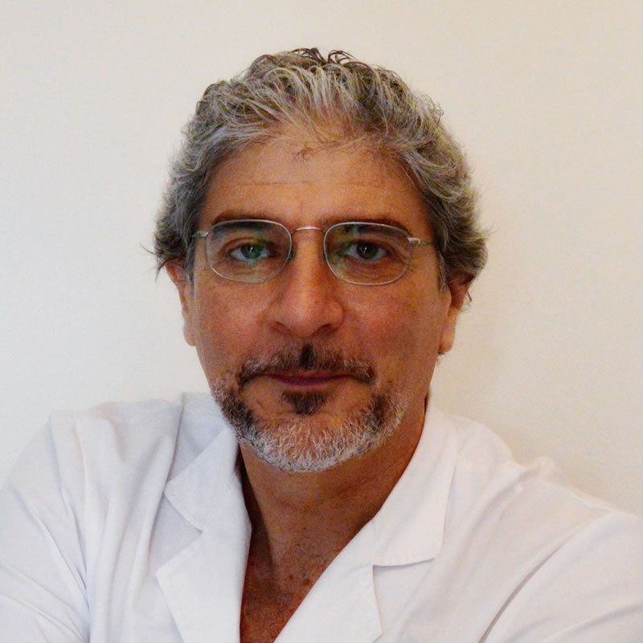

Dra. Gabriela A. López

• Cursó la carrera de Medicina en la UBA, egresando en el año 1987.
• Realiza la residencia de cirugía general en el Hospital de San Isidro finalizando en 1991, obteniendo el título de especialista en Cirugía General, otorgado por el Ministerio de Salud y Acción Social, Secretaría de Salud de la Nación.
• En el año 1991 ingresa a la concurrencia de Ginecología en el Hospital A. Zubizarreta, culminando en el año 1995. Obtiene el título de Especialista en Ginecología, otorgado por el Ministerio de Salud Pública de la Nación.
• Realiza el postgrado de Mastología en la Asociación Argentina de Mastología en 1998.
• Cursa el postgrado en Medicina Estética de la Asociación Médica Argentina en 2003.
• Desde el 2003 dedicada con exclusividad a la práctica privada de la Medicina Estética.
• Comprometida con la educación médica continua, ha participado en numerosos Congresos y Jornadas de formación en Medicina Estética y Cirugía Plástica.
Dr. Gustavo Benedetto

• Cursó la carrera de Medicina en la UBA, egresando en el año 1986.
• Ingresa por concurso en la residencia de cirugía general en el Hospital de San Isidro culminando la misma en 1989, obteniendo el título de Especialista en Cirugía General, otorgado por el Ministerio de Salud y Acción Social, Secretaría de Salud de la Nación.
• En el año 1889 ingresa por concurso en la residencia de cirugía plástica, reparadora y quemados en el Hospital interzonal Eva Perón, completándola en 1992, obteniendo el título de Especialista en Cirugía Plástica, reparadora y quemados, otorgado por el Ministerio de Salud y Acción Social, Secretaría de Salud de la Nación.
• Cirujano plástico en el sector cirugía plástica del servicio de cirugía general del Hospital Municipal de San Isidro hasta diciembre de 1995.
• Cirujano Plástico y miembro fundador del centro médico Clínica de la Mujer en Tigre.
• Cirujano Plástico en el servicio de cirugía plástica, reparadora y estética del Hospital Magdalena V., de Martínez en Tigre, acercando la cirugía estética a miles de pacientes de sectores medios y bajos de la población durante 10 años, hasta diciembre de 2007.
• Cirujano Plástico en Medinter, instituto privado del quemado, en la unidad de quemados de Clínica Ciarec, desde el 2000 al 2008.
• Desde el 2008 dedicado con exclusividad a la práctica privada de la Cirugía Plástica y Medicina Estética.
Contactanos
-
Artesthetics
Pasaje de las Ciencias 75
Edificio North Coral Plaza - Oficina 208
Nordelta, Buenos Aires - 11 3281 2737

- © 2018 AE | Artesthetics
- Design: HTML5 UP